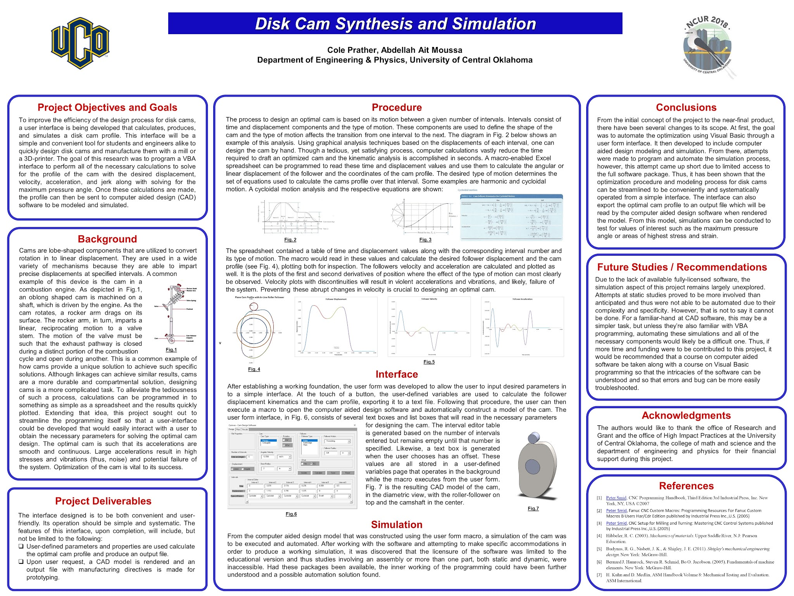

Abstract:
Cams are fundamental components of many mechanical systems. Their ability to impart well-defined motion provides a unique solution that would be difficult or impossible to achieve with other linkages. Cam design is a challenging and strenuous process that involves conflicting geometric and dynamic constraints. Several commercial software packages have been developed to help engineers and students design, test, and optimize cams for specific applications, however, such software is costly and less convenient. To achieve the objective of an affordable, user-friendly, and competitive interface for engineering students to learn cam design and optimization, I developed and programmed a user form with Visual Basic for Applications. A macro was written to take necessary user-defined inputs and performs geometric, dynamic, and optimization calculations resulting in a cam profile and its desired kinematic performance. The user form allows for a simplistic yet powerful interface. Inputs are directed to the macro to calculate the coordinates of the cam profile, its linear and angular displacement, and corresponding position derivatives. Plots of position, velocity, acceleration, and jerk are displayed on the output panel, as well as an animation of the modeled cam profile. The model can be quickly exported to CAD software for animation, and once the desired cam is selected, the user needs only to click a button on the user form and a 3D-printer-ready G-code will be generated. Unlike available software packages, this interface will allow users to easily design, test, and manufacture an optimized cam.
